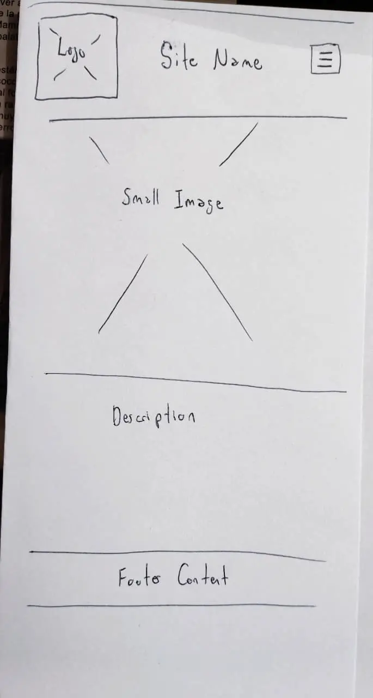
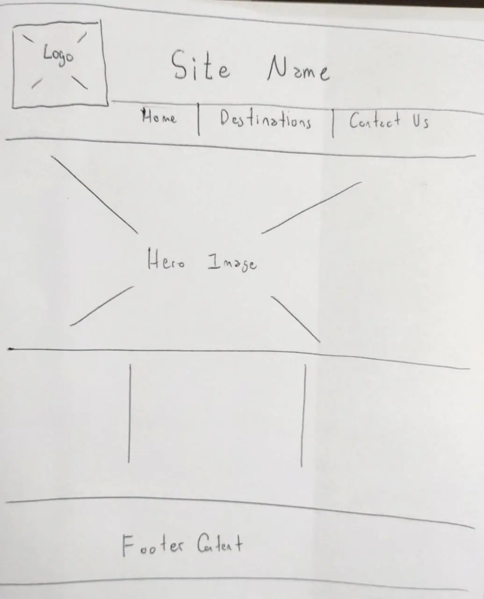

Site Name
This name was chosen because it represents a website dedicated to showcasing Bolivia's most important tourist destinations, culture, and natural landmarks. The world "Explorer" invites visitors to discover the country.
Optional domain: boliviatravelexplorer.com
Site Purpose
The purpose of this website is to provide clear and engaging information about the most important tourist destinations in Bolivia. The site will help visitors learn about places to visit, their location, main attractions, and travel tips. It will also encourage users to explore Bolivia as a travel destination.
Scenarios
- What are the most popular tourist destinatios in Bolivia?
- What is the best time of year to visit places like Uyuni or La Paz?
- What activities can I do in each destination?
Color Schema
- Red #8C1D18Used for headings and accents
- Green #2E7D32Used for buttons and highlights
- Gray #F5F5F5Used for background
Typography
- Montserrat - Used for headings
- Roboto - Used for body text and paragraphs
Wireframes
Mobile View

Header
Navigation (hamburger menu)
Main destination image
Destination description
Footer
Desktop View

Header with navigation
Hero image
Three-column destination section
Footer